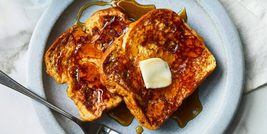

French Toast

Description:
Oh yummy, your favorite French Toast!
Ingredients:
- 4 Eggs
- Vanilla extract
- 6 Slices of White Bread
- 1/2 stick butter
- Half & Half or milk
- Cinnamon (if desired)
- Your favorite syrup
Preparation Instructions:
- Whisk eggs, vanilla, half/milk and vanilla to tase in a large glass bowl
- Preheat large frypan on medium and melt 1/8th stick butter
- Dip (separately) 2 slices of bread till soaked, then place in frying pan
- Cook 7.5 minutes, Flip slices, Cook additional 7.5 minutes
- Set aside cooked slices, more butter in pan, repeat steps 3-4
- Enjoy with sprinkled cinnamon / maple syrup to taste
Back to Odin Recipes Homepage